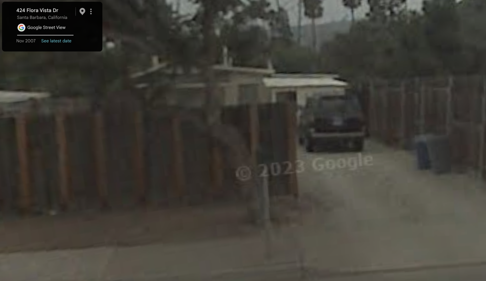
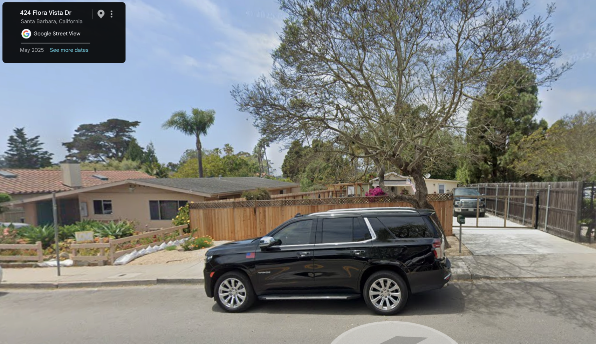
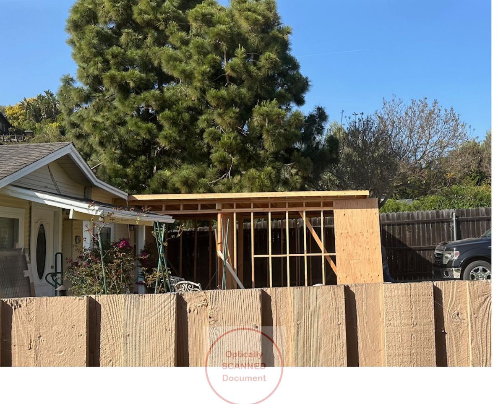
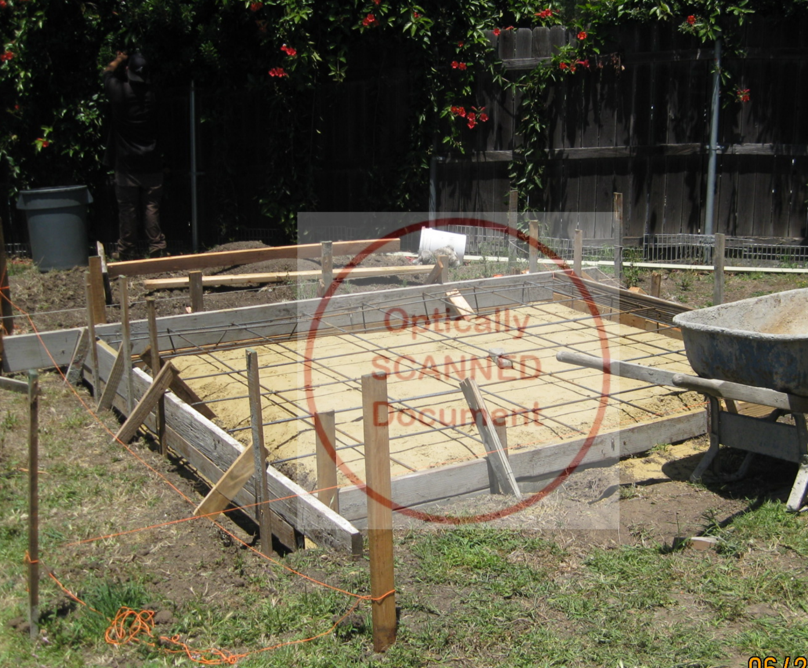
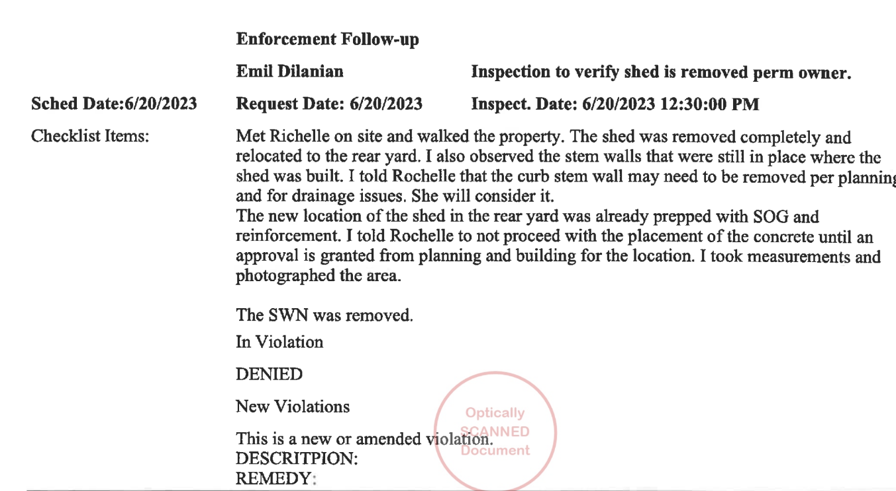

ENF2023-00179
Code Enforcement
Closed — Violations Abated
Full correspondence from the city's enforcement file (Street File 3, pp. 1–16). Source: seller disclosure package.
April 26, 2023
Complaint submitted to Code Compliance: "URGENT: Substandard Building — Request for Investigation." Case opened as ENF2023-00179.
April 27, 2023
City inspected. Found unpermitted construction at front of existing dwelling, described as "in set back and in framing stage." Stop Work Notice posted. Two violations cited under SBMC §22.04.010.
May 2, 2023
Rochelle emailed Dilanian: "As I understand the policies, we are building within the setback and are not able to build storage unit in the front yard. It appears what was there was not permitted. With that, I am thinking the best course of action is to move it to the back of the property unless you see a pathway for us to save what we have done so far."
May 2023 (undated letter)
Dilanian responded: the shed "is now constructed" and must be demolished to the slab surface — "the planning department has not approved its location." Advised Rochelle to draw a site plan with property lines, setbacks, and proposed shed location, then bring it to planning before going to building counter for a permit.
June 19, 2023
Rochelle emailed Dilanian: "We have moved the structure and are ready for city to come by and confirm."
June 20, 2023
Dilanian reinspection. Shed removed completely from front, relocated to rear yard. Stem walls still in place where shed had been — told Rochelle curb/stem wall "may need to be removed per planning and for drainage issues. She will consider it." Rear yard already prepped with SOG formwork and reinforcement. Told Rochelle not to pour concrete until approval granted. Stop Work Notice removed.
June 21, 2023
Rochelle emailed General Planning Counter (cc: Dilanian): "Where do I find the open yard requirements?" Planning (Marisela Salinas) responded: "We need a scaled site plan to confirm compliance with the setbacks and open yard. Given how far back the main residence is from the street, we're not sure that the required open yard is met. If it's nonconforming, there might not be an appropriate location for the shed without other discretionary approvals."
June 30, 2023
Dilanian emailed Rochelle: "Any progress on the relocation of the shed? I hope you didn't place concrete yet."
July 10, 2023
Email thread continues, subject: "RE: Do I need a permit."
August 10, 2023
Case closed: "Violations Abated." File printed this date.
What the File Shows
The cited violations (unpermitted front framing) were resolved — the structure was removed. The case closed on that basis. However, the correspondence also shows that the shed relocation to the rear yard was never fully approved. Both Dilanian and Planning (Salinas) required a site plan and planning review before the shed could be placed and concrete poured. The file does not contain evidence that this approval was obtained. The shed now sits on a built concrete foundation in the rear yard.
Photos




